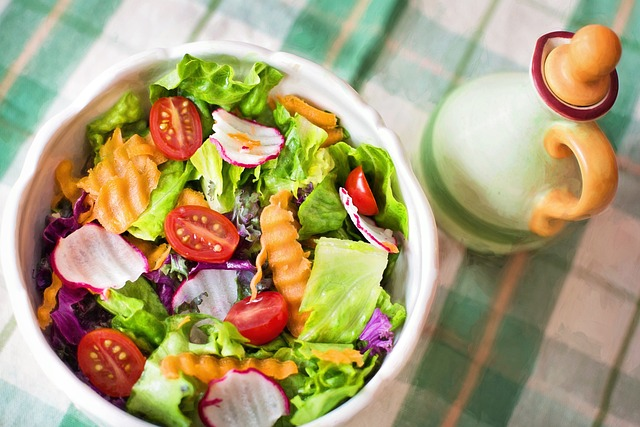

Back to Home
Green Salad

An healthy and delicious side dish
This green salad recipe is simple, but it's still packed with delicious textures and flavors. It's a perfect side
dish - you can serve it with almost anything!
Ingredients
- Half cup chopped onion
- Half cup chopped green bell pepper
- 2 (10 ounce) packages mixed salad greens
- 4 thinly sliced chicken deli meat, chopped
- 1 tomato, chopped
- 1/4 teaspoon onion powder
- 3 dashes garlic powder
- 2 pinches salt and grounded black pepper to taste
- 3 tablespoons balsamic vinaigrette salad dressing
Directions
- Place onion and bell pepper in a microwave-safe bowl; heat in microwave on high until soft, about 1 to 2 minutes. Set aside to cool.
- Combine onion, bell pepper, salad greens, deli meat, and tomato in a large salad bowl. Sprinkle with onion powder, garlic powder, salt, and black pepper; toss well to mix.
- Pour on salad dressing; toss well and serve.